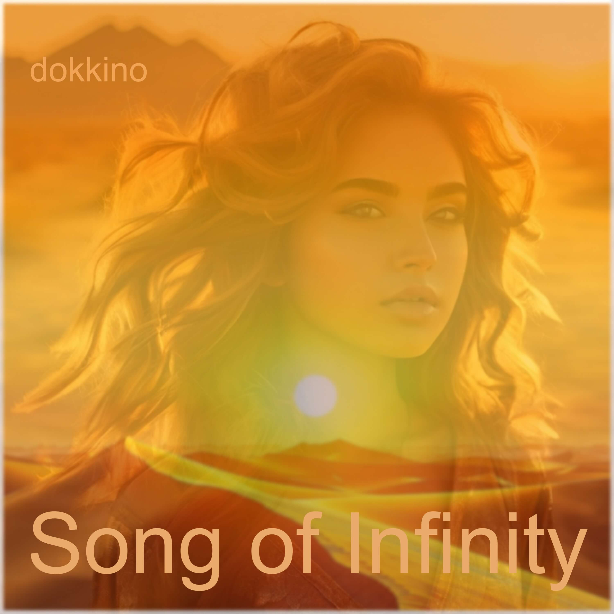

Автор текста: Сергей Мачуляк, 2020
Английская адаптация: Сергей Мачуляк
Музыка: Сергей Мачуляк
Релиз: 28 октября 2025
© Сергей Мачуляк. Все права защищены.
Song of Infinity — гипнотический Melodic Deep House трек, соединяющий клубный пульс, живые струнные, глубокий мужской речитатив и парящий двуязычный вокал.
«Song of Infinity» — это метафизическое осмысление соприкосновения божественного и земного. Мир песни соткан из чистых природных стихий: раскалённого песка, солнца, медленно уходящего за край, тихой грозы и облаков, плывущих по небу.
Через эти образы раскрывается таинство зарождения жизни: капли дождя падают, подобно слезам неба, и в замедленном движении взрывают верхний слой почвы, создавая колыбель для семени и пробуждая росток. Кульминация песни — образ плачущего Бога, который, воплотившись в человека, впервые познаёт собственное творение изнутри. Он испытывает неизмеримую полноту радости, милости и земной уязвимости, где всё мироздание и бесконечный свет любви сходятся в одном взгляде, укрытом тенью любимых ресниц.
Burned sand, the Sun drank slowly, slowly
And fell over the edge to nowhere, nowhere, deliberately.
A ray got tangled in your hair, like a little one in a stirrup —
You are a magical girl, from another space and time.
Обожжённый песок Солнце выпило медленно, медленно
И упало за край в никуда, в никуда, преднамеренно.
В кудрях луч запутался, словно маленький в стремени,
Ты волшебная девочка, из другого пространства и времени.
Нежность воздуха, солнечный свет
Проникает во все клетки тела.
Всё Любовь, всё играет,
Всё словно поёт,
И душа не имеет предела!
The tenderness of air, sunlight
Penetrates into the cells of the body.
Everything is Love, everything is playing,
Everything seems to be singing,
And the soul has no limit!
Слёзы землю взорвали для семени,
Камни в небо взлетели за птицами.
Плачет Бог, очеловечившись —
Ты меня накрываешь ресницами.
За птицами...
Улетаем за птицами.
Tears exploded the earth for the seed,
Stones flew into the sky after the birds.
God cries, becoming human —
You cover me with your eyelashes.
Обожжённый песок Солнце выпило медленно, медленно
И упало за край в никуда, в никуда, преднамеренно.
В кудрях луч запутался, словно маленький в стремени,
Ты волшебная девочка, из другого пространства и времени.
Burned sand, the Sun drank slowly, slowly
And fell over the edge to nowhere, nowhere, deliberately.
A ray got tangled in your hair, like a little one in a stirrup —
You are a magical girl, from another space and time.
Где-то тихо бродит гроза,
Тихо, что даже неловко шептать.
Ты долго смотрела на облака,
Которые в тучи шли умирать.
Somewhere a thunderstorm wanders quietly,
So quietly that it's awkward to whisper.
You looked at the clouds for a long time
That were going to die into the clouds.
Нежность воздуха, солнечный свет
Проникает во все клетки тела.
Всё Любовь, всё играет,
Всё словно поёт,
И душа не имеет предела!
The tenderness of air, sunlight
Penetrates into the cells of the body.
Everything is Love, everything is playing,
Everything seems to be singing,
And the soul has no limit!